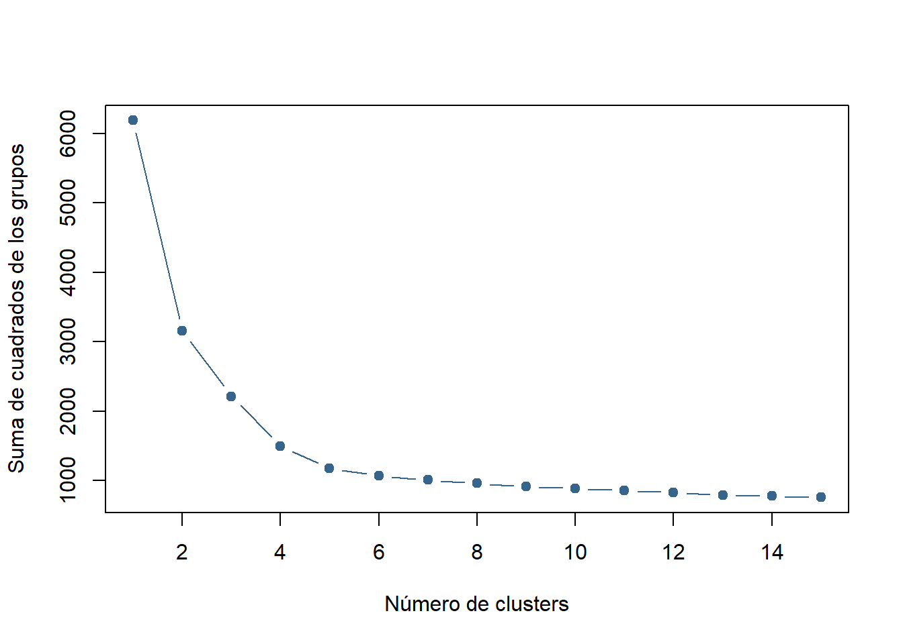

5 Modelado
5.1 Análisis Cluster
El análisis cluster es un conjunto de técnicas multivariantes utilizadas para clasificar a un conjunto de individuos en grupos homogéneos.
#Números de clusters
SSW <- vector(mode = "numeric", length = 15)
n=dim(prcomp(setas50_train)$x)[1]
#Variabilidad de todos los datos, es decir, todos los datos como un único cluster
SSW[1] <- (n - 1) * sum(apply(prcomp(setas50_train)$x,2,var))
#Variabilidad de cada modelo, desde 2 clusters hasta 15 clusters
for (i in 2:15) SSW[i] <- sum(kmeans(prcomp(setas50_train)$x,centers=i,nstart=25)$withinss)
#Dibujamos un gráfico con el resultado
plot(1:15, SSW, type="b", xlab="Número de clusters", ylab="Suma de cuadrados de los grupos",pch=19, col="steelblue4") En el gráfico podemos observar que a partir del aplicar 5 clusters a nuestros datos la suma de los cuadrados se reduce en menor medida, por ello realizamos el análisis con ese número de clusters.
#Análisis cluster
clusters.datos=kmeans(prcomp(setas50_train)$x,centers=5,nstart=25)
table(clusters.datos$cluster,setas_train$Venenosas)##
## 0 1
## 1 0 768
## 2 612 475
## 3 1056 6
## 4 11 1097
## 5 843 6Podemos ver que un cluster identificar correctamente a las setas venenosas mientras que el resto de cluster las setas están un poco más repartidas, por ejemplo el cluster que reparte las setas de la forma 612-475 es menos especifíco que los cluster que reparten 843-6, 1056-6 y 11-1097.
pca=prcomp(setas50_train)$x
#Gráfico de los cluster
plot(prcomp(setas50_train)$x,main="Clusters",type="n")
for(i in 1:dim(setas50_train)[1]){
points(pca[i,1],pca[i,2],pch=19,col=clusters.datos$cluster[i]+1)
}
legend("topright",
inset = 0.01,
legend = c(1:5),
fil = seq(2,6))
#Gráfico por tipo de setas:
par(mfrow=c(1,2))
plot(prcomp(setas50_train)$x,main="Clusters: setas comestibles",type="n")
for(i in 1:dim(setas50_train)[1]){
if(setas_train[i,1]==0){
points(pca[i,1],pca[i,2],pch=19,col=clusters.datos$cluster[i]+1)
}
}
legend("topright",
inset = 0.01,
legend = c(1:5),
fil = seq(2,6))
plot(prcomp(setas50_train)$x,main="Clusters: setas venenosas",type="n")
for(i in 1:dim(setas50_train)[1]){
if(setas_train[i,1]==1){
points(pca[i,1],pca[i,2],pch=19,col=clusters.datos$cluster[i]+1)
}
}
legend("topright",
inset = 0.01,
legend = c(1:5),
fil = seq(2,6))
En estos gráficos podemos ver lo que hemos comentado antes, tenemos bastante bien clasificados los tipos de setas pero uno de los cluster no clasifica tan bien como los otros, pues las setas están mezcladas, luego habría que estudiar ese para ver como diferenciar las venenosas de las comestibles.
Vamos a realizar otro análisis cluster pero aumentando el número de cluster con la intención de con un número mayor de cluster se clasifiquen mejor las setas.
#Análisis cluster
clusters.datos.train=kmeans(prcomp(setas50_train)$x,centers=8,nstart=25)
table(clusters.datos.train$cluster,setas_train$Venenosas)##
## 0 1
## 1 464 12
## 2 127 264
## 3 3 542
## 4 430 204
## 5 1044 0
## 6 16 562
## 7 438 0
## 8 0 768pca=prcomp(setas50_train)$x
#Gráfico de los cluster
plot(prcomp(setas50_train)$x,main="Clusters",type="n")
for(i in 1:dim(setas50_train)[1]){
points(pca[i,1],pca[i,2],pch=19,col=clusters.datos.train$cluster[i]+1)
}
legend("topright",
inset = 0.01,
legend = c(1:8),
fil = seq(2,9))
#Gráfico por tipo de setas:
par(mfrow=c(1,2))
plot(prcomp(setas50_train)$x,main="Clusters: setas comestibles",type="n")
for(i in 1:dim(setas50_train)[1]){
if(setas_train[i,1]==0){
points(pca[i,1],pca[i,2],pch=19,col=clusters.datos.train$cluster[i]+1)
}
}
legend("topright",
inset = 0.01,
legend = c(1:8),
fil = seq(2,9))
plot(prcomp(setas50_train)$x,main="Clusters: setas venenosas",type="n")
for(i in 1:dim(setas50_train)[1]){
if(setas_train[i,1]==1){
points(pca[i,1],pca[i,2],pch=19,col=clusters.datos.train$cluster[i]+1)
}
}
legend("topright",
inset = 0.01,
legend = c(1:8),
fil = seq(2,9))
Vemos que tras realizar el análisis cluster con 8 grupos, no obtenemos tan claramente la clasificación de setas pero volvemos a tener dos grupos bien diferenciados, que son los que vemos en el gráfico del análisis de componentes principales, el resto están mezclados entre los cluster y habría que analizar cada uno de ellos para poder obtener alguna información más.
5.2 k-NN
El algoritmo k-NN clasifica cada dato nuevo en el grupo que corresponda, según tenga k vecinos más cerca de un grupo o de otro. Es decir, calcula la distancia del elemento nuevo a cada uno de los existentes, y ordena dichas distancias de menor a mayor para ir seleccionando el grupo al que pertenecer. Este grupo será, por tanto, el de mayor frecuencia con menores distancias.
#Buscamos los vecinos más cercanos
prediccion_knn=knn(setas50_train,setas50_test,cl=setas_train$Venenosas,k=1)
table(prediccion_knn,setas_test$Venenosas)##
## prediccion_knn 0 1
## 0 836 3
## 1 2 783La predicción con el 1-vecino más próximo, es bastante buena, lo podemos ver a simple vista en la tabla. Pero vamos a realizar un análisis con distintas medidas de precisión.
# Exactitud/Error
accuracy = sum(prediccion_knn == setas_test$Venenosas)/nrow(setas_test)
error = 1-accuracy
# Acierto sobre el total de las setas VENENOSAS, sensitivity o recall
sensitivity = sum((prediccion_knn == setas_test$Venenosas) & (setas_test$Venenosas == 1)) / sum(setas_test$Venenosas == 1)
recall = sensitivity
# Acierto sobre el total de las setas COMESTIBLES
specificity = sum(prediccion_knn == setas_test$Venenosas & setas_test$Venenosas == 0) / sum(setas_test$Venenosas == 0)
# Acierto cuando el predicho es VENENOSAS
precision = sum( (prediccion_knn== setas_test$Venenosas) & (prediccion_knn == 1))/ sum(prediccion_knn == 1)
# Acierto cuando el predicho es COMESTIBLE
npv = sum(prediccion_knn == setas_test$Venenosas & prediccion_knn == 0) / sum(prediccion_knn == 0)
# F1_score
f1score = 2*precision*recall /(precision+recall)
#Tabla de medidas de precisión
c(accuracy = accuracy, error = error, sensitivity = sensitivity, specificity = specificity, precision = precision, npv = npv, f1=f1score)## accuracy error sensitivity specificity precision npv
## 0.996921182 0.003078818 0.996183206 0.997613365 0.997452229 0.996424315
## f1
## 0.996817314Si usamos el 1 vecino más cercano, podemos ver en sus medidas de precisión que el ajueste es como decíamos, es decir, predice la toxicidad de las setas con un grado de acierto muy alto, solo comete un error del 0.3%.
Pero vamos a probar a calcular todas estas medidas con un número distinto de vecinos más cercano, por si acaso disminuyese ese pequeño error.
k=(dim(setas50_train)[1]^(4/(4+dim(setas50_train)[2])))*10
#Matriz de las medidas de precision:
medidas_presicision=matrix(nrow=round(k),ncol=7)
nombres_medidas=c("accuracy", "error", "sensitivity", "specificity", "precision", "npv", "f1score")
colnames(medidas_presicision)=nombres_medidas
for (i in 1:round(k)){
prediccion_knn=knn(setas_train[k50$medoid,],setas_test,cl=setas_train$Venenosas[k50$medoid],k=i)
medidas_presicision[i,1] = sum(prediccion_knn == setas_test$Venenosas)/nrow(setas_test)
medidas_presicision[i,2] = 1-medidas_presicision[i,1]
medidas_presicision[i,3] = sum((prediccion_knn == setas_test$Venenosas) & (setas_test$Venenosas == 1)) /sum(setas_test$Venenosas == 1)
medidas_presicision[i,4] = sum(prediccion_knn == setas_test$Venenosas & setas_test$Venenosas == 0) / sum(setas_test$Venenosas == 0)
medidas_presicision[i,5] = sum( (prediccion_knn== setas_test$Venenosas) & (prediccion_knn == 1))/ sum(prediccion_knn == 1)
medidas_presicision[i,6] = sum(prediccion_knn == setas_test$Venenosas & prediccion_knn == 0) / sum(prediccion_knn == 0)
medidas_presicision[i,7] = 2*medidas_presicision[i,5]*medidas_presicision[i,3] /(medidas_presicision[i,5]+medidas_presicision[i,3])
}
medidas_presicision## accuracy error sensitivity specificity precision npv
## [1,] 0.9174877 0.08251232 0.84096692 0.9892601 0.9865672 0.8689727
## [2,] 0.8971675 0.10283251 0.79516539 0.9928401 0.9904913 0.8378651
## [3,] 0.8934729 0.10652709 0.78371501 0.9964200 0.9951535 0.8308458
## [4,] 0.8947044 0.10529557 0.78371501 0.9988067 0.9983793 0.8311817
## [5,] 0.8602217 0.13977833 0.71119593 1.0000000 1.0000000 0.7868545
## [6,] 0.8294335 0.17056650 0.64758270 1.0000000 1.0000000 0.7515695
## [7,] 0.7961823 0.20381773 0.57888041 1.0000000 1.0000000 0.7168520
## [8,] 0.7580049 0.24199507 0.50000000 1.0000000 1.0000000 0.6807474
## [9,] 0.7315271 0.26847291 0.44529262 1.0000000 1.0000000 0.6577708
## [10,] 0.6970443 0.30295567 0.37404580 1.0000000 1.0000000 0.6300752
## [11,] 0.6791872 0.32081281 0.33715013 1.0000000 1.0000000 0.6166299
## [12,] 0.6447044 0.35529557 0.26590331 1.0000000 1.0000000 0.5922261
## [13,] 0.6200739 0.37992611 0.21501272 1.0000000 1.0000000 0.5759450
## [14,] 0.6003695 0.39963054 0.17430025 1.0000000 1.0000000 0.5635508
## [15,] 0.5775862 0.42241379 0.12722646 1.0000000 1.0000000 0.5498688
## [16,] 0.5683498 0.43165025 0.10814249 1.0000000 1.0000000 0.5445094
## [17,] 0.5529557 0.44704433 0.07633588 1.0000000 1.0000000 0.5358056
## [18,] 0.5387931 0.46120690 0.04707379 1.0000000 1.0000000 0.5280403
## [19,] 0.5357143 0.46428571 0.04071247 1.0000000 1.0000000 0.5263819
## f1score
## [1,] 0.90796703
## [2,] 0.88214538
## [3,] 0.87686833
## [4,] 0.87811832
## [5,] 0.83122677
## [6,] 0.78610039
## [7,] 0.73327961
## [8,] 0.66666667
## [9,] 0.61619718
## [10,] 0.54444444
## [11,] 0.50428164
## [12,] 0.42010050
## [13,] 0.35392670
## [14,] 0.29685807
## [15,] 0.22573363
## [16,] 0.19517796
## [17,] 0.14184397
## [18,] 0.08991495
## [19,] 0.07823961#Grafico de las medidas de precision
plot(seq(1,round(k)),medidas_presicision[,1],main="Medidas de precision",type="n",xlab="Número de k vecinos",ylab="",ylim=c(0,1),xlim=c(1,round(k)+2))
for (i in 1:7) {
points(seq(1,round(k)),medidas_presicision[,i],lwd=2,col=i+1)
lines(seq(1,round(k)),medidas_presicision[,i],lwd=2,col=i+1)
}
legend("topright",
inset = 0.01,
legend = c("Ac","Er", "Se","Sp","Pr","NPV","F1"),
fil = seq(2, round(k)+1)) Observamos que para un número de vecinos mayor que 4, las medidas de precisión van empeorando, lo vemos muy claramente en el la medida de error y de sensibilidad, pasa de haber solo un 10% de error a un 13% y de una sensibilidad del casi 80% a un 71%. Luego cualquier número de vecino que eligamos menor de 5, obtendremos unas medidas bastante parecidas. Entonces como dijimos en el caso del vecino más cercano, el grado de acierto al predecir es alto.
Observamos que para un número de vecinos mayor que 4, las medidas de precisión van empeorando, lo vemos muy claramente en el la medida de error y de sensibilidad, pasa de haber solo un 10% de error a un 13% y de una sensibilidad del casi 80% a un 71%. Luego cualquier número de vecino que eligamos menor de 5, obtendremos unas medidas bastante parecidas. Entonces como dijimos en el caso del vecino más cercano, el grado de acierto al predecir es alto.
5.3 Arboles de Decisión
Un árbol de decisión es un modelo de predicción utilizado en diversos ámbitos. Dado un conjunto de datos se fabrican diagramas de construcciones lógicas, muy similares a los sistemas de predicción basados en reglas, que sirven para representar y categorizar una serie de condiciones que ocurren de forma sucesiva, para la resolución de un problema.
setas50_train.respuesta=data.frame(cbind(setas_train[,1],setas50_train))
names(setas50_train.respuesta)[1]="Venenosas"
arbol=rpart(as.factor(setas50_train.respuesta$Venenosas)~., data=setas50_train.respuesta,method="class")
summary(arbol)## Call:
## rpart(formula = as.factor(setas50_train.respuesta$Venenosas) ~
## ., data = setas50_train.respuesta, method = "class")
## n= 4874
##
## CP nsplit rel error xerror xstd
## 1 0.72023810 0 1.00000000 1.0000000 0.014832389
## 2 0.03656463 1 0.27976190 0.2797619 0.010143391
## 3 0.02806122 2 0.24319728 0.2240646 0.009217646
## 4 0.01743197 5 0.15731293 0.1547619 0.007802951
## 5 0.01488095 6 0.13988095 0.1322279 0.007254798
## 6 0.01296769 7 0.12500000 0.1271259 0.007122805
## 7 0.01147959 9 0.09906463 0.1147959 0.006789995
## 8 0.01000000 10 0.08758503 0.1058673 0.006535449
##
## Variable importance
## v638 v51 v713 v749 v4491 v1373 v3944 v3945 v3221 v3900 v2951 v1626 v1799
## 16 16 13 11 11 11 2 2 2 2 1 1 1
## v1602 v1709 v1638 v1811 v808 v1909 v1441 v1076 v1489 v2019 v2766
## 1 1 1 1 1 1 1 1 1 1 1
##
## Node number 1: 4874 observations, complexity param=0.7202381
## predicted class=0 expected loss=0.4825605 P(node) =1
## class counts: 2522 2352
## probabilities: 0.517 0.483
## left son=2 (2994 obs) right son=3 (1880 obs)
## Primary splits:
## v638 < 0.6108108 to the left, improve=1340.4800, (0 missing)
## v51 < 0.6108108 to the left, improve=1330.1000, (0 missing)
## v713 < 0.6108108 to the left, improve=1143.0300, (0 missing)
## v4491 < 0.6443609 to the left, improve= 954.3761, (0 missing)
## v1489 < 0.5732575 to the left, improve= 881.4827, (0 missing)
## Surrogate splits:
## v51 < 0.6108108 to the left, agree=0.995, adj=0.988, (0 split)
## v713 < 0.6108108 to the left, agree=0.932, adj=0.823, (0 split)
## v4491 < 0.6443609 to the left, agree=0.903, adj=0.749, (0 split)
## v749 < 0.5470085 to the left, agree=0.895, adj=0.729, (0 split)
## v1373 < 0.5470085 to the left, agree=0.887, adj=0.706, (0 split)
##
## Node number 2: 2994 observations, complexity param=0.03656463
## predicted class=0 expected loss=0.1887108 P(node) =0.6142799
## class counts: 2429 565
## probabilities: 0.811 0.189
## left son=4 (2782 obs) right son=5 (212 obs)
## Primary splits:
## v3900 < 0.4928571 to the right, improve=120.6115, (0 missing)
## v2951 < 0.2327327 to the right, improve=116.2098, (0 missing)
## v3221 < 0.3137255 to the right, improve=115.1618, (0 missing)
## v1369 < 0.3867521 to the left, improve=114.3779, (0 missing)
## v1993 < 0.3971471 to the left, improve=113.5999, (0 missing)
## Surrogate splits:
## v3221 < 0.3801587 to the right, agree=0.958, adj=0.406, (0 split)
## v3945 < 0.4281046 to the right, agree=0.956, adj=0.377, (0 split)
## v3944 < 0.3801587 to the right, agree=0.955, adj=0.368, (0 split)
## v2951 < 0.1779279 to the right, agree=0.936, adj=0.099, (0 split)
## v3094 < 0.8141026 to the left, agree=0.933, adj=0.047, (0 split)
##
## Node number 3: 1880 observations, complexity param=0.01743197
## predicted class=1 expected loss=0.04946809 P(node) =0.3857201
## class counts: 93 1787
## probabilities: 0.049 0.951
## left son=6 (41 obs) right son=7 (1839 obs)
## Primary splits:
## v1076 < 0.5588235 to the left, improve=75.73966, (0 missing)
## v4491 < 0.5492063 to the left, improve=64.44555, (0 missing)
## v1489 < 0.5199147 to the left, improve=49.58558, (0 missing)
## v2850 < 0.5615616 to the left, improve=40.34677, (0 missing)
## v1614 < 0.5409357 to the left, improve=30.84934, (0 missing)
## Surrogate splits:
## v1489 < 0.451952 to the left, agree=0.988, adj=0.439, (0 split)
## v51 < 0.5945946 to the left, agree=0.982, adj=0.195, (0 split)
## v713 < 0.5405405 to the left, agree=0.982, adj=0.171, (0 split)
## v2850 < 0.451952 to the left, agree=0.982, adj=0.171, (0 split)
## v2551 < 0.7606838 to the right, agree=0.981, adj=0.122, (0 split)
##
## Node number 4: 2782 observations, complexity param=0.02806122
## predicted class=0 expected loss=0.1495327 P(node) =0.5707838
## class counts: 2366 416
## probabilities: 0.850 0.150
## left son=8 (1954 obs) right son=9 (828 obs)
## Primary splits:
## v638 < 0.4027027 to the right, improve=106.75290, (0 missing)
## v51 < 0.4027027 to the right, improve= 90.81071, (0 missing)
## v1369 < 0.3867521 to the left, improve= 77.95269, (0 missing)
## v1993 < 0.413229 to the left, improve= 74.77820, (0 missing)
## v1626 < 0.3971471 to the left, improve= 72.64450, (0 missing)
## Surrogate splits:
## v51 < 0.4027027 to the right, agree=0.934, adj=0.778, (0 split)
## v713 < 0.3506757 to the right, agree=0.873, adj=0.572, (0 split)
## v4491 < 0.4796992 to the right, agree=0.730, adj=0.093, (0 split)
## v2766 < 0.7332859 to the left, agree=0.721, adj=0.062, (0 split)
## v3094 < 0.5530146 to the right, agree=0.709, adj=0.023, (0 split)
##
## Node number 5: 212 observations, complexity param=0.01296769
## predicted class=1 expected loss=0.2971698 P(node) =0.0434961
## class counts: 63 149
## probabilities: 0.297 0.703
## left son=10 (127 obs) right son=11 (85 obs)
## Primary splits:
## v3221 < 0.3327731 to the right, improve=25.06054, (0 missing)
## v3944 < 0.3621849 to the right, improve=25.06054, (0 missing)
## v3900 < 0.3497615 to the right, improve=25.06054, (0 missing)
## v3945 < 0.4920509 to the right, improve=25.06054, (0 missing)
## v2106 < 0.3423423 to the left, improve=21.81702, (0 missing)
## Surrogate splits:
## v3944 < 0.3621849 to the right, agree=1.000, adj=1.000, (0 split)
## v3900 < 0.3497615 to the right, agree=1.000, adj=1.000, (0 split)
## v3945 < 0.4920509 to the right, agree=1.000, adj=1.000, (0 split)
## v713 < 0.5587838 to the left, agree=0.934, adj=0.835, (0 split)
## v2240 < 0.5470085 to the left, agree=0.925, adj=0.812, (0 split)
##
## Node number 6: 41 observations
## predicted class=0 expected loss=0 P(node) =0.008411982
## class counts: 41 0
## probabilities: 1.000 0.000
##
## Node number 7: 1839 observations
## predicted class=1 expected loss=0.02827624 P(node) =0.3773082
## class counts: 52 1787
## probabilities: 0.028 0.972
##
## Node number 8: 1954 observations, complexity param=0.01147959
## predicted class=0 expected loss=0.0593654 P(node) =0.4009027
## class counts: 1838 116
## probabilities: 0.941 0.059
## left son=16 (1921 obs) right son=17 (33 obs)
## Primary splits:
## v2951 < 0.2111111 to the right, improve=48.47284, (0 missing)
## v2551 < 0.5 to the right, improve=26.64284, (0 missing)
## v638 < 0.4547297 to the right, improve=17.00953, (0 missing)
## v1993 < 0.413229 to the left, improve=13.66701, (0 missing)
## v2315 < 0.402834 to the left, improve=13.35626, (0 missing)
##
## Node number 9: 828 observations, complexity param=0.02806122
## predicted class=0 expected loss=0.3623188 P(node) =0.169881
## class counts: 528 300
## probabilities: 0.638 0.362
## left son=18 (504 obs) right son=19 (324 obs)
## Primary splits:
## v3944 < 0.5615616 to the right, improve=124.06900, (0 missing)
## v1626 < 0.5323887 to the right, improve=102.95330, (0 missing)
## v3945 < 0.6711712 to the right, improve=100.30040, (0 missing)
## v1614 < 0.428475 to the right, improve= 89.84562, (0 missing)
## v2584 < 0.5843455 to the right, improve= 86.74496, (0 missing)
## Surrogate splits:
## v1626 < 0.5323887 to the right, agree=0.905, adj=0.756, (0 split)
## v3945 < 0.6711712 to the right, agree=0.894, adj=0.728, (0 split)
## v3221 < 0.5067568 to the right, agree=0.876, adj=0.682, (0 split)
## v1909 < 0.428475 to the right, agree=0.861, adj=0.645, (0 split)
## v1441 < 0.428475 to the right, agree=0.860, adj=0.642, (0 split)
##
## Node number 10: 127 observations, complexity param=0.01296769
## predicted class=1 expected loss=0.496063 P(node) =0.02605663
## class counts: 63 64
## probabilities: 0.496 0.504
## left son=20 (61 obs) right son=21 (66 obs)
## Primary splits:
## v2951 < 0.2875375 to the right, improve=59.61728, (0 missing)
## v749 < 0.4206514 to the right, improve=27.54101, (0 missing)
## v1424 < 0.4206514 to the right, improve=27.54101, (0 missing)
## v1373 < 0.4324324 to the right, improve=27.54101, (0 missing)
## v1489 < 0.5067568 to the right, improve=26.51829, (0 missing)
## Surrogate splits:
## v749 < 0.4206514 to the right, agree=0.819, adj=0.623, (0 split)
## v1424 < 0.4206514 to the right, agree=0.819, adj=0.623, (0 split)
## v1373 < 0.4324324 to the right, agree=0.819, adj=0.623, (0 split)
## v1489 < 0.5067568 to the right, agree=0.811, adj=0.607, (0 split)
## v1693 < 0.4324324 to the right, agree=0.803, adj=0.590, (0 split)
##
## Node number 11: 85 observations
## predicted class=1 expected loss=0 P(node) =0.01743947
## class counts: 0 85
## probabilities: 0.000 1.000
##
## Node number 16: 1921 observations
## predicted class=0 expected loss=0.04476835 P(node) =0.3941321
## class counts: 1835 86
## probabilities: 0.955 0.045
##
## Node number 17: 33 observations
## predicted class=1 expected loss=0.09090909 P(node) =0.00677062
## class counts: 3 30
## probabilities: 0.091 0.909
##
## Node number 18: 504 observations, complexity param=0.01488095
## predicted class=0 expected loss=0.1428571 P(node) =0.1034058
## class counts: 432 72
## probabilities: 0.857 0.143
## left son=36 (459 obs) right son=37 (45 obs)
## Primary splits:
## v2019 < 0.6363023 to the right, improve=55.00156, (0 missing)
## v2766 < 0.6363023 to the right, improve=48.24636, (0 missing)
## v2839 < 0.5323887 to the right, improve=41.91914, (0 missing)
## v2584 < 0.5843455 to the right, improve=36.63196, (0 missing)
## v713 < 0.3765182 to the left, improve=34.57366, (0 missing)
## Surrogate splits:
## v2766 < 0.6363023 to the right, agree=0.988, adj=0.867, (0 split)
## v2839 < 0.5323887 to the right, agree=0.964, adj=0.600, (0 split)
## v2551 < 0.6363023 to the right, agree=0.958, adj=0.533, (0 split)
## v2584 < 0.5843455 to the right, agree=0.958, adj=0.533, (0 split)
## v3094 < 0.5323887 to the right, agree=0.948, adj=0.422, (0 split)
##
## Node number 19: 324 observations, complexity param=0.02806122
## predicted class=1 expected loss=0.2962963 P(node) =0.06647517
## class counts: 96 228
## probabilities: 0.296 0.704
## left son=38 (70 obs) right son=39 (254 obs)
## Primary splits:
## v1799 < 0.3423423 to the left, improve=88.43395, (0 missing)
## v1709 < 0.3971471 to the left, improve=86.20078, (0 missing)
## v1602 < 0.2469636 to the left, improve=84.87984, (0 missing)
## v1358 < 0.3423423 to the left, improve=84.66338, (0 missing)
## v1993 < 0.3971471 to the left, improve=82.08786, (0 missing)
## Surrogate splits:
## v1602 < 0.2469636 to the left, agree=0.994, adj=0.971, (0 split)
## v1709 < 0.3867521 to the left, agree=0.994, adj=0.971, (0 split)
## v1638 < 0.3971471 to the left, agree=0.988, adj=0.943, (0 split)
## v1811 < 0.2896743 to the left, agree=0.988, adj=0.943, (0 split)
## v808 < 0.3423423 to the left, agree=0.988, adj=0.943, (0 split)
##
## Node number 20: 61 observations
## predicted class=0 expected loss=0 P(node) =0.01251539
## class counts: 61 0
## probabilities: 1.000 0.000
##
## Node number 21: 66 observations
## predicted class=1 expected loss=0.03030303 P(node) =0.01354124
## class counts: 2 64
## probabilities: 0.030 0.970
##
## Node number 36: 459 observations
## predicted class=0 expected loss=0.06971678 P(node) =0.09417316
## class counts: 427 32
## probabilities: 0.930 0.070
##
## Node number 37: 45 observations
## predicted class=1 expected loss=0.1111111 P(node) =0.009232663
## class counts: 5 40
## probabilities: 0.111 0.889
##
## Node number 38: 70 observations
## predicted class=0 expected loss=0 P(node) =0.01436192
## class counts: 70 0
## probabilities: 1.000 0.000
##
## Node number 39: 254 observations
## predicted class=1 expected loss=0.1023622 P(node) =0.05211325
## class counts: 26 228
## probabilities: 0.102 0.898#Árbol de decisión:
rpart.plot(arbol)
#Tabla comparativa:
setas50_test.data=as.data.frame(setas50_test)
colnames(setas50_test.data)=colnames(setas50_train.respuesta)[2:51]
prediccion.arbol=round(predict(arbol,setas50_test.data)[,2])
table(prediccion.arbol,setas_test[,1])##
## prediccion.arbol 0 1
## 0 800 57
## 1 38 729El gráfico resultante no es interpretable pues nuestro datos están basado en la distancia de las observaciones a los medoides que hemos calculado anteriormente, pero podemos decir que los medoides que toma como más importantes son las observaciones 638, 51 y 713.
En la tabla podemos ver que a la hora de predecir nuestro árbol de decisión comete cierto error, a continuación analizamos ese error con distintas medidas de precisión.
# Exactitud/Error
accuracy = sum(prediccion.arbol == setas_test[,1])/nrow(setas_test)
error = 1-accuracy
# Acierto sobre el total de las setas VENENOSAS, sensitivity o recall
sensitivity = sum((prediccion.arbol == setas_test[,1]) & (setas_test[,1] == 1)) / sum(setas_test[,1] == 1)
recall = sensitivity
# Acierto sobre el total de las setas COMESTIBLES
specificity = sum(prediccion.arbol == setas_test[,1] & setas_test[,1] == 0) / sum(setas_test[,1] == 0)
# Acierto cuando el predicho es VENENOSAS
precision = sum( (prediccion.arbol== setas_test[,1]) & (prediccion.arbol == 1))/ sum(prediccion.arbol == 1)
# Acierto cuando el predicho es COMESTIBLE
npv = sum(prediccion.arbol== setas_test[,1] & prediccion.arbol == 0) / sum(prediccion.arbol == 0)
# F1_score
f1score = 2*precision*recall /(precision+recall)
#Tabla de medidas de precisión
c(accuracy = accuracy, error = error, sensitivity = sensitivity, specificity = specificity, precision = precision, npv = npv, f1=f1score)## accuracy error sensitivity specificity precision npv
## 0.94150246 0.05849754 0.92748092 0.95465394 0.95045632 0.93348891
## f1
## 0.93882807El error que se comete es superior que en el caso del modelo k-NN con el vecino más próximo, pero sigue siendo un error aceptable para el modelo, por lo que podemos determinar que el árbol de decisión predice casi todas las setas correctamente.
5.4 Bosques Aleatorios
Random forest es una combinación de árboles predictores tal que cada árbol depende de los valores de un vector aleatorio probado independientemente y con la misma distribución para cada uno de estos. Es una modificación sustancial de bagging que construye una larga colección de árboles no correlacionados y luego los promedia.
setas.rf=randomForest(setas50_train, as.factor(setas50_train.respuesta$Venenosas), ntree=70, importance=FALSE, proximity=TRUE, mtry=4, replace=FALSE,method="class")
#Tabla comparativa
prediccion.rf=predict(setas.rf, setas50_test.data)
table(prediccion.rf,as.factor(setas_test[,1]))##
## prediccion.rf 0 1
## 0 835 2
## 1 3 784La predicción es casi perfecta, pues solo se equivoca clasificando tres setas. Analizamos la precisión de los bosques aleatorios con las medidas de precisión.
# Exactitud/Error
accuracy = sum(prediccion.rf == setas_test[,1])/nrow(setas_test)
error = 1-accuracy
# Sensibilidad: acierto sobre el total de las setas VENENOSAS
sensitivity = sum((prediccion.rf == setas_test[,1]) & (setas_test[,1] == 1)) / sum(setas_test[,1] == 1)
recall = sensitivity
# Especifidad: acierto sobre el total de las setas COMESTIBLES
specificity = sum(prediccion.rf == setas_test[,1] & setas_test[,1] == 0) / sum(setas_test[,1] == 0)
# Precisión: acierto cuando el predicho es VENENOSAS
precision = sum( (prediccion.rf== setas_test[,1]) & (prediccion.rf == 1))/ sum(prediccion.rf == 1)
# NPV: acierto cuando el predicho es COMESTIBLE
npv = sum(prediccion.rf== setas_test[,1] & prediccion.rf == 0) / sum(prediccion.rf == 0)
# F1_score
f1score = 2*precision*recall /(precision+recall)
#Tabla de medidas de precisión
c(accuracy = accuracy, error = error, sensitivity = sensitivity, specificity = specificity, precision = precision, npv = npv, f1=f1score)## accuracy error sensitivity specificity precision npv
## 0.996921182 0.003078818 0.997455471 0.996420048 0.996188056 0.997610514
## f1
## 0.996821360El error que se comete mejora respecto a los dos algoritmo anteriores. Pero esta “perfección” también puede deberse a un sobreajuste de los datos.
5.5 Support Vector Machines
Las máquinas de vectores soporte (del inglés support-vector machines, SVM) son un conjunto de algoritmos de aprendizaje supervisado desarrollados por Vladimir Vapnik y su equipo en los laboratorios AT&T.
Estos métodos están propiamente relacionados con problemas de clasificación y regresión. Dado un conjunto de ejemplos de entrenamiento podemos etiquetar las clases y entrenar una SVM para construir un modelo que prediga la clase de una nueva muestra.
Para determinar el valor de gamma y el coste, usamos los datos que hemos reservado para validación y realizamos una estimación con ellos.
# Para estimar el gamma:
gamma_est=1/apply(setas50_validacion,2,sd)
# Para estimar el coste:
norma2<-function(x) sqrt(sum(x^2))
cost_est=apply(setas50_validacion,2,norma2)
#Ajustamos el modelo
setas.svm=svm(setas50_train,setas_train[,1],type="C-classification",kernel="radial",gamma=mean(gamma_est),cost=mean(cost_est),scale=F)
#Tabla comparativa
prediccion_svm=predict(setas.svm,setas50_test)
table(prediccion_svm,setas_test[,1])##
## prediccion_svm 0 1
## 0 838 0
## 1 0 786La tabla nos dice que el modelo predice a la perfección los datos. Las medidas de precisión no van a aportar nada que no sepamos con mirar simplemente la tabla.
# Medidas de precisión
accuracy = sum(prediccion_svm == setas50_train.respuesta$Venenosas)/nrow(setas50_train.respuesta)## Warning in `==.default`(prediccion_svm, setas50_train.respuesta$Venenosas):
## longitud de objeto mayor no es múltiplo de la longitud de uno menor## Warning in is.na(e1) | is.na(e2): longitud de objeto mayor no es múltiplo de la
## longitud de uno menorerror = 1-accuracy
# Acierto sobre el total de las setas VENENOSAS, sensitivity o recall
sensitivity = sum((prediccion_svm == setas50_train.respuesta$Venenosas) & (setas50_train.respuesta$Venenosas == 1)) / sum(setas50_train.respuesta$Venenosas == 1)## Warning in `==.default`(prediccion_svm, setas50_train.respuesta$Venenosas):
## longitud de objeto mayor no es múltiplo de la longitud de uno menor
## Warning in `==.default`(prediccion_svm, setas50_train.respuesta$Venenosas):
## longitud de objeto mayor no es múltiplo de la longitud de uno menorrecall = sensitivity
# Acierto sobre el total de las setas COMESTIBLES
specificity = sum(prediccion_svm == setas50_train.respuesta$Venenosas & setas50_train.respuesta$Venenosas == 0) / sum(setas50_train.respuesta$Venenosas == 0)## Warning in `==.default`(prediccion_svm, setas50_train.respuesta$Venenosas):
## longitud de objeto mayor no es múltiplo de la longitud de uno menor
## Warning in `==.default`(prediccion_svm, setas50_train.respuesta$Venenosas):
## longitud de objeto mayor no es múltiplo de la longitud de uno menor# Acierto cuando el predicho es VENENOSAS
precision = sum((prediccion_svm== setas50_train.respuesta$Venenosas) & (prediccion_svm == 1))/ sum(prediccion_svm == 1)## Warning in `==.default`(prediccion_svm, setas50_train.respuesta$Venenosas):
## longitud de objeto mayor no es múltiplo de la longitud de uno menor
## Warning in `==.default`(prediccion_svm, setas50_train.respuesta$Venenosas):
## longitud de objeto mayor no es múltiplo de la longitud de uno menor## Warning in (prediccion_svm == setas50_train.respuesta$Venenosas) &
## (prediccion_svm == : longitud de objeto mayor no es múltiplo de la longitud de
## uno menor# Acierto cuando el predicho es COMESTIBLE
npv = sum(prediccion_svm== setas50_train.respuesta$Venenosas & prediccion_svm == 0) / sum(prediccion_svm == 0)## Warning in `==.default`(prediccion_svm, setas50_train.respuesta$Venenosas):
## longitud de objeto mayor no es múltiplo de la longitud de uno menor## Warning in is.na(e1) | is.na(e2): longitud de objeto mayor no es múltiplo de la
## longitud de uno menor## Warning in prediccion_svm == setas50_train.respuesta$Venenosas & prediccion_svm
## == : longitud de objeto mayor no es múltiplo de la longitud de uno menor# F1_score
f1score = 2*precision*recall /(precision+recall)
#Tabla de medidas de precisión
c(accuracy = accuracy, error = error, sensitivity = sensitivity, specificity = specificity, precision = precision, npv = npv, f1=f1score)## accuracy error sensitivity specificity precision npv
## 0.5473943 0.4526057 0.5323129 0.5614592 1.5928753 1.6897375
## f1
## 0.7979605Realizamos otro ajuste del modelo pero esta vez ajustando los parámetros a través de la función tune.svm().
#Ajustamos los parámtros
parametros=tune.svm(setas50_validacion, setas_validacion[,1], gamma=seq(5,8.5,by=0.5), cost=seq(10,30,by=10))
attributes(parametros)## $names
## [1] "best.parameters" "best.performance" "method" "nparcomb"
## [5] "train.ind" "sampling" "performances" "best.model"
##
## $class
## [1] "tune"# Calculamos el modelo con estos parámetros
setas.svm_parametros=svm(setas50_train,setas_train[,1], type="C-classification", kernel="radial", gamma= parametros$best.parameters[1], cost= parametros$best.parameters[2], scale=F)
# Tabla comparativa
prediccion_svm.parametros=predict(setas.svm_parametros, setas50_test)
table(prediccion_svm.parametros, setas_test[,1])##
## prediccion_svm.parametros 0 1
## 0 838 0
## 1 0 786Obtenemos el mismo resultado que en el ajuste anterior, la perfección.